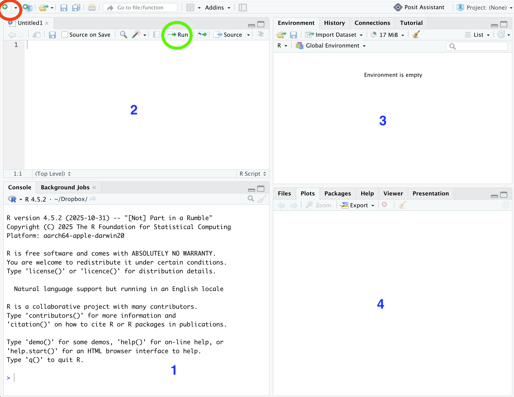

RStudio#

Fig. 2 The RStudio logo.#
Although R is a programming language and, unlike SPSS, has no point-and-click menus for building analyses, there is software that makes using R much easier. RStudio is an integrated development environment (IDE) for working with R. It helps you organise scripts, plots, and files, and allows you to keep everything related to a particular analysis together in one place.
RStudio was originally developed as open-source software by a company of the same name. As that company expanded into a broader range of data science tools, it changed its name to Posit. Posit now develops a range of products, but RStudio remains open source and free to use.
Posit also provides RStudio in the cloud, which means you can use R and RStudio in a web browser without installing anything on your own device. In this unit we will use RStudio in the cloud. One advantage of this is that everyone has access to the same software setup, which saves us from spending lots of time troubleshooting different laptops, operating systems, and installation problems.
Warning
You can of course install R and RStudio on your own device if you wish, but note that our in-person sessions will use RStudio in the cloud. So we will not be able to troubleshoot issues related to local installations.
The RStudio Interface#
In this section we will go through some of the basics of the RStudio interface.
{kind=link}

Fig. 3 The RStudio Interface.#
The screenshot above shows the RStudio interface, which is usually divided into four panes. One of these panes may not appear by default. If that happens, click File → New File → R Script, or click the button in the top left that looks like a white rectangle with a green plus symbol (circled in red on the screenshot).
Pane 1 is the Console. This is where R executes your commands. If you type 2 + 2 into the Console and press Enter, R will display 4.
Pane 2 is the Source pane, where you write scripts. A script is simply a file containing your R code. You can think of it a bit like a recipe: a list of steps that takes you from raw ingredients to a finished result. In data analysis, those ingredients are usually your raw data, and the final result might be a cleaned dataset, a graph, or the output of a statistical model.
In practice, we usually do not write substantial analyses directly in the Console. Instead, we write code in a script. A script can be saved, edited, and rerun, which makes it much more useful than typing one-off commands into the Console.
Pane 3 is the Environment pane. This shows the objects currently stored in memory and available for you to work with. As you create vectors, data frames, and other objects (more on them later), they will appear here along with some information about them, such as their names and sizes.
Pane 4 is where you will often view outputs, especially plots. It also contains some other tabs, such as Files, Packages, and Help, which we will come back to later in the unit.
Once you have written a script you can run it by clicking on the run button (circled in blue on the screenshot). The run button runs the line of code that the cursor is currently on and then moves the cursor to the next line. So you can run through your whole script by repeatedly pressing run. Alternatively, you can run several lines at once (or all lines) by clicking and dragging to highlight them before you press run.
In practice, it is quite rare for a script to run perfectly first time. You will probably see some error messages, and you will need to debug them. This is perfectly normal, even for experienced users, so do not be discouraged when it happens. Fixing errors is one of the best ways to learn R.
It is also unlikely that you would write a script from start to finish and only then try to run it. It makes much more sense to run small sections of code as you go, checking that each part works as intended.
Tip
Think of RStudio as a kitchen: A script is the recipe, the environment pane is your worktop with all your ingredients on it, the console is the chef, and the output pane is the finished meal. Note that the chef is very literal-minded: it will do exactly what you tell it, no more and no less, and it will not know what you meant if you make a spelling mistake. Spelling mistakes include getting the case wrong: cheese and Cheese are not the same thing in R.